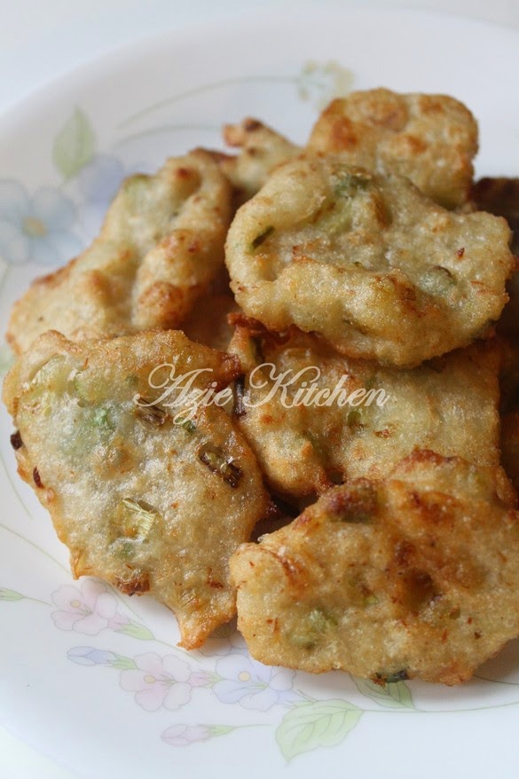
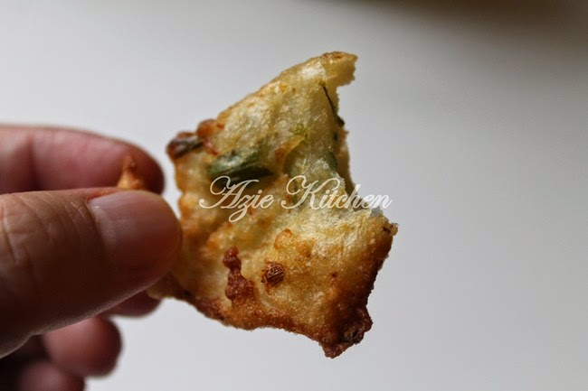
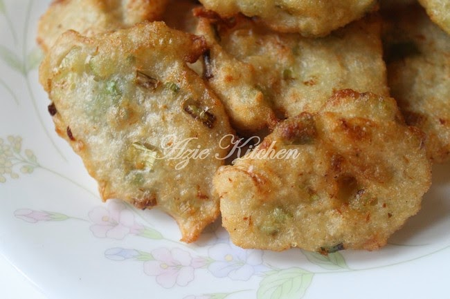
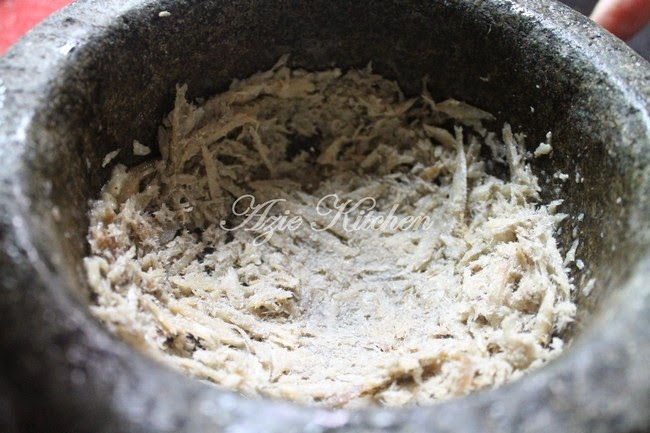
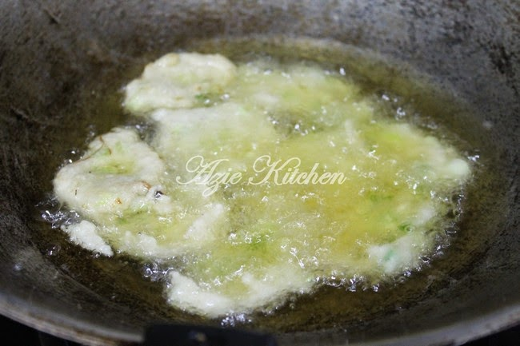
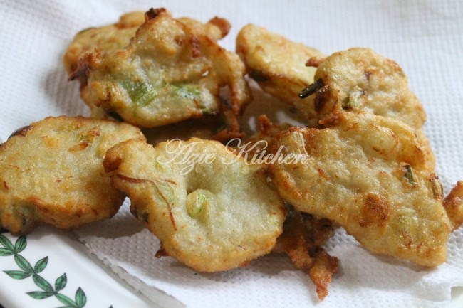

Cekodok Ikan Bilis Daun Bawang Lembut dan Sedap




Cekodok Ikan Bilis Daun Bawang Lembut dan Sedap
Bahan bahan:
1/4 kg tepung gandum
3 ulas bawang putih
Segenggam ikan bilis
2 cekak daun bawang - hiris kecil
Sedikit minyak panas/majerin cair panas
1 gelas air panas/secukupnya
1/2 sudu besar garam
1 sudu besar gula
Cara-cara:
1.Panaskan mentega dan goreng ikan bilis seketika. Angkat dan tumbuk bersama bawang putih sehingga lumat. Satukan dengan tepung gandum dan daun bawang. Masukkan garam dan gula.

2.Akhir sekali, tuang sedikit minyak panas dan air panas sedikit demi sedikit hingga sesuai kecairannya. Gaul sebati. Sedia untuk digoreng.
3.Tuang adunan ke dalam minyak panas dengan menggunakan sudu dan bentukkan supaya menjadi leper dan goreng sehingga bewarna keemasan.


Boleh dicicah dengan sos cili atau dimakan begitu sahaja. Saya suka makan begitu sahaja. Nota:
Boleh ganti ikan bilis dengan udang kecil.
Credit: Azie Kitchen